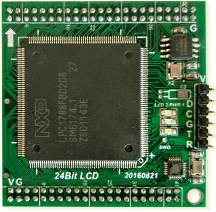

四层核心板设计，中间两层完整的电源GND，顺便吐槽下LPC1788的管脚，排列的乱七八糟！真没见过有这么乱的。。。
+32bit SDRAM / SPI Flash！
+两路USB ：Device + Host！
+两路CAN、多路串口、一路以太网板载PHY。
+24bit 1024*768分辨率TFT Driver + I2S！
2016-08-21 / 搞起 ：SDRAM！
-- SDRAM --
不像LCP4370，主频204M，SDRAM时钟轻松跑102M，而LPC1788的时钟120M，那么SDRAM的时钟要么和Core一样120M，要么就是一半60MHz，60MHz显然是无法容忍的，于是选择不分频，跑120MHz！其代价就是：需要不停的调整SDRAM参数以适合120MHz！
其实配置很简单，只需要将EMCCLKSEL_Val配置为0即可：
配置的寄存器为：LPC_SC->EMCCLKSEL
反复读写SDRAM，8位、16位、32位测试，调试的时候发现一两次的读写是OK的，时间一长就挂掉了，于是加了个统计功能，不断调整SDRAM延时参数即可：